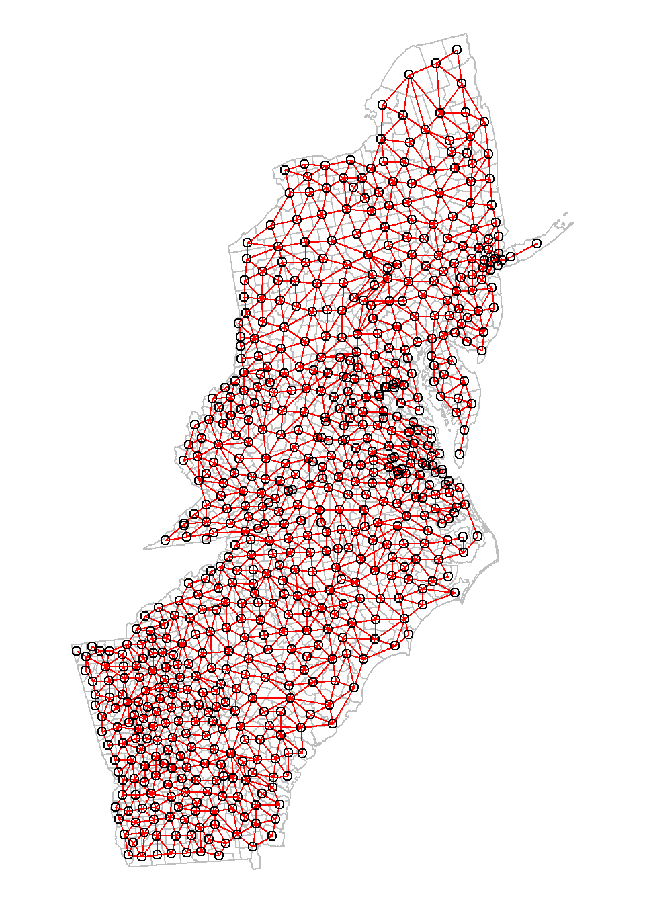
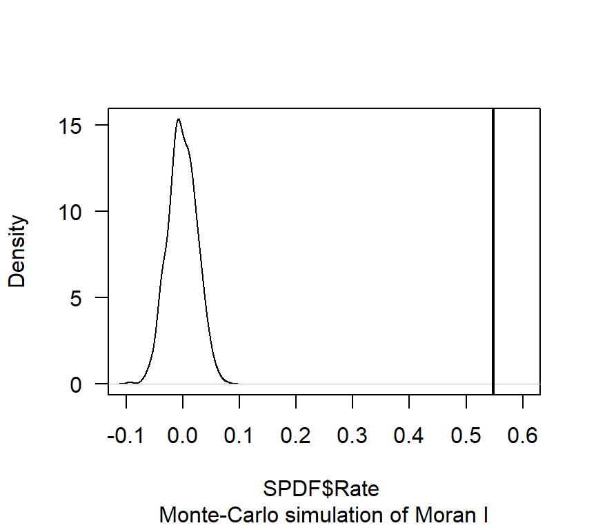
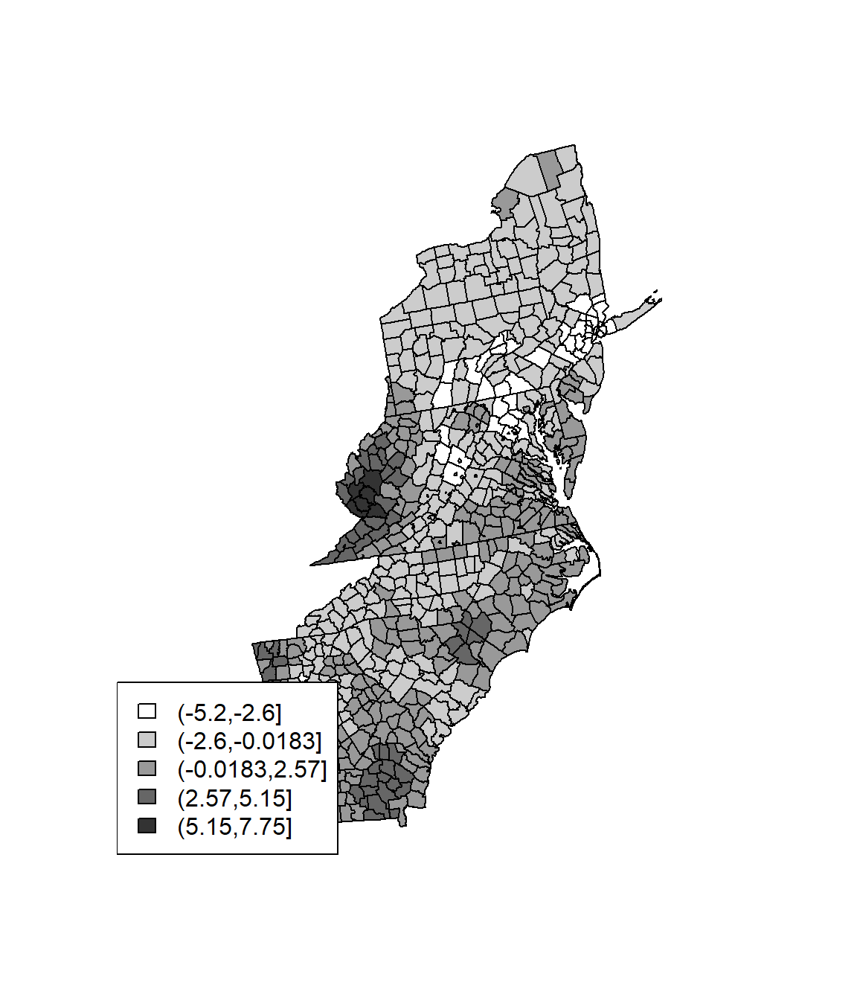

Spatial Autocorrelation
“Spatial autocorrelation is a method of Exploratory Spatial Data Analysis (ESDA)”. It helps to study and understanding of the spatial distribution and spatial structure as well as they allow for detecting spatial dependence or autocorrelation in spatial data.
Spatial autocorrelation measures the degree of correlation on space (Cliff and Ord 1973, 1981). Tests of spatial autocorrelation examine the independency of observed value in relation to values of that variable at neighboring locations. Spatial autocorrelation can be positive or negative.
Positive spatial autocorrelation indicates that similar values appear close to each other, or cluster, in space.
Negative spatial autocorrelation occurs when dissimilar values occur near one another.
Null spatial autocorrelation indicates that the spatial pattern is random.
Classic spatial autocorrelation statistics include:
R support only Moran’s I and Geary’s C.
Load packages
library(sp) ## Data management
library(spdep) ## Spatial autocorrelation
library(gstat) ## Geostatistics
library(splancs) ## Kernel Density
library(spatstat) ## Geostatistics
library(pgirmess) ## Spatial autocorrelation
library(RColorBrewer) ## Visualization
library(classInt) ## Class intervals
library(raster) ## spatial data
library(broom) # contains the tidy function which now replaces the fortify function for ggplot
library(viridis) # For nicer ggplot colours
library(gridExtra) # Multiple plot
library(ggplot2) # Multiple plot
library(raster) # raster
library(rgdal) # rasterLoad Data
The data could be found here.
# Define data folder
dataFolder<-"D:\\Dropbox\\WebSite_Data\\R_Data\\Data_GWR\\"
COUNTY<-shapefile(paste0(dataFolder,"COUNTY_ATLANTIC.shp"))
state<-shapefile(paste0(dataFolder,"STATE_ATLANTIC.shp"))
df<-read.csv(paste0(dataFolder,"data_atlantic_1998_2012.csv"), header=T)Create a data frame
df[6] <- lapply(df[6], as.numeric) # Rate data to numeric
SPDF<-merge(COUNTY,df, by="FIPS")
names(SPDF)## [1] "FIPS" "ID" "x.x" "y.x" "REGION_ID"
## [6] "DIVISION_I" "STATE_ID" "COUNTY_ID" "REGION" "DIVISION"
## [11] "STATE" "COUNTY" "x.y" "y.y" "Rate"
## [16] "POV" "SMOK" "PM25" "NO2" "SO2"Before autocorrelation analysis, we have to construct a neighbours list from polygon list and then we have to calculate spatial weights for neighbours lists.
Construct neighbours list from polygon list
First we create a neighbourhood object using the poly2nb function and a output area shapefile.
neighbourhood <- poly2nb(SPDF, queen=TRUE)
{
par(mar=c(0,0,0,0))
plot(SPDF,
border="grey")
plot(neighbourhood,
coords=coordinates(SPDF),
col="red",
add=T)
}
Spatial weights for neighbours lists
neighbourhood_weights_list <- nb2listw(neighbourhood, style="W", zero.policy=TRUE)Morans I
Moran?’s I is a well-known test for spatial autocorrelation. It is a particular case of the general cross-product that depends on a spatial weight matrix or a distance related decline function. Like a correlation coefficient the, values of Moran’s I range from +1 meaning strong positive spatial autocorrelation to 0 meaning a random pattern to -1 indicating strong negative spatial autocorrelation. We will mostly follow tutorial describe here and github.
n’s test for spatial autocorrelation using a spatial weights matrix in weights list form. The assumptions underlying the test are sensitive to the form of the graph of neighbour relationships and other factors, and results may be checked against those of moran.mc permutations.
Global Moran’s I
The Spatial Autocorrelation with Global Moran’s I is an inferential statistic, which means that the results of the analysis are always interpreted within the context of its null hypothesis.
moran.test(SPDF$Rate,neighbourhood_weights_list)##
## Moran I test under randomisation
##
## data: SPDF$Rate
## weights: neighbourhood_weights_list
##
## Moran I statistic standard deviate = 22.356, p-value < 2.2e-16
## alternative hypothesis: greater
## sample estimates:
## Moran I statistic Expectation Variance
## 0.5477054258 -0.0015037594 0.0006035296Note that the p-value computed from the moran.test function is not computed from an MC simulation but analytically instead. This may not always prove to be the most accurate measure of significance. To test for significance using the MC simulation method instead, use the moran.mc function.
gobal.moran.mc <- moran.mc(SPDF$Rate,
neighbourhood_weights_list,
nsim=599)
# View results (including p-value)
gobal.moran.mc##
## Monte-Carlo simulation of Moran I
##
## data: SPDF$Rate
## weights: neighbourhood_weights_list
## number of simulations + 1: 600
##
## statistic = 0.54771, observed rank = 600, p-value = 0.001667
## alternative hypothesis: greater# Plot the distribution (note that this is a density plot instead of a histogram)
plot(gobal.moran.mc, main="", las=1)
Local Moran’s I
The Local Moran statistic was suggested in Anselin (1995) as a way to identify local clusters and spatial outliers. Moran I is combined with the location of each observation in the Moran Scatterplot. This allows for a classification of the significant locations as high-high and low-low spatial clusters, and high-low and low-high spatial outliers. Note that the reference to high and low is relative to the mean of the variable, and should not be interpreted in an absolute sense.
local.moran.results <- localmoran(SPDF$Rate,
neighbourhood_weights_list,
p.adjust.method="bonferroni",
na.action=na.exclude,
zero.policy=TRUE)
summary(local.moran.results)## Ii E.Ii Var.Ii
## Min. :-0.95257 Min. :-0.001504 Min. :0.08913
## 1st Qu.:-0.00021 1st Qu.:-0.001504 1st Qu.:0.14091
## Median : 0.16426 Median :-0.001504 Median :0.16465
## Mean : 0.54770 Mean :-0.001504 Mean :0.21703
## 3rd Qu.: 0.59652 3rd Qu.:-0.001504 3rd Qu.:0.24772
## Max. :13.58693 Max. :-0.001504 Max. :0.99535
## Z.Ii Pr(z > 0)
## Min. :-1.449668 Min. :0.0000
## 1st Qu.: 0.002867 1st Qu.:0.4661
## Median : 0.364182 Median :1.0000
## Mean : 1.222661 Mean :0.7486
## 3rd Qu.: 1.484580 3rd Qu.:1.0000
## Max. :27.301673 Max. :1.0000# add moran's I results back to the shapefile
SPDF@data$lmoran_i <- local.moran.results[,1]
SPDF@data$lmoran_p <- local.moran.results[,5]
SPDF@data$lmoran_sig <- local.moran.results[,5]<0.05Plot Moran’I
col.palette.1<-colorRampPalette(c("blue","sky blue", "yellow", "yellow3","orange", "red", "red3"),space="rgb",interpolate = "linear")
col.palette.2<-colorRampPalette(c("blue","sky blue", "yellow", "orange"),space="rgb",interpolate = "linear")
col.palette.3<-colorRampPalette(c("yellow", "blue"),space="rgb")
p1<-spplot(SPDF, "lmoran_i", main="Local Moran's I",
col.regions=col.palette.1(100))
p2<-spplot(SPDF, "lmoran_p", main="P-values",
col.regions=col.palette.2(100))
p3<-spplot(SPDF, "lmoran_sig", main="P-values < 0.05",
cut=2,col.regions=col.palette.3(3))Blue represents hot spots or spatial outliers
grid.arrange(p1, p2, p3, ncol=3)
Gearys C
Geary’s C is a measure of spatial autocorrelation or determines if adjacent observations of the same attributes are correlated in multi- or bi-directional ways. The value of Geary’s C lies between 0 and some general value greater than 1. Values significantly lower than one demonstrate increasing positive spatial autocorrelation, while values significantly higher than one illustrate increasing negative spatial autocorrelation. Geary’s C is inversely related to Moran’s I, but it is not identical. Moran’s I is a measure of global spatial autocorrelation, while Geary’s C is more sensitive to local spatial autocorrelation.
Geary’s test for spatial autocorrelation using a spatial weights matrix in weights list form. The assumptions underlying the test are sensitive to the form of the graph of neighbour relationships and other factors, and results may be checked against those of geary.mc permutation
geary.test(SPDF$Rate,neighbourhood_weights_list)##
## Geary C test under randomisation
##
## data: SPDF$Rate
## weights: neighbourhood_weights_list
##
## Geary C statistic standard deviate = 20.049, p-value < 2.2e-16
## alternative hypothesis: Expectation greater than statistic
## sample estimates:
## Geary C statistic Expectation Variance
## 0.4475172082 1.0000000000 0.0007593585gobal.geary.mc <- geary.mc(SPDF$Rate,
neighbourhood_weights_list,
nsim=599)
# View results (including p-value)
gobal.geary.mc##
## Monte-Carlo simulation of Geary C
##
## data: SPDF$Rate
## weights: neighbourhood_weights_list
## number of simulations + 1: 600
##
## statistic = 0.44752, observed rank = 1, p-value = 0.001667
## alternative hypothesis: greaterGetis Gi
Hotspot analysis using Getis-Ord Gi* statistic (pronounced G-i-star) for spatial vectors to identify the locations of statistically significant hot spots and cold spots in data. The z-scores and p-values indicates where features with either high or low values cluster spatially.
wr <- poly2nb(SPDF, row.names=SPDF$FIPS, queen=FALSE)
lstw <- nb2listw(wr, style='B')
Gi <- localG(SPDF$Rate, lstw)
head(Gi)## [1] 0.5840283 -1.4912058 -1.7824333 -0.6611661 -1.4912058 0.3436725Gcuts <- cut(Gi, 5)
Gcutsi <- as.integer(Gcuts)
cols <- rev(gray(seq(0,1,.2)))
plot(SPDF, col=cols[Gcutsi])
legend('bottomleft', levels(Gcuts), fill=cols)
ws <- include.self(wr)
lstws <- nb2listw(ws, style='B')
Gis <- localG(SPDF$Rate, lstws)
Gscuts <- cut(Gis, 5)
Gscutsi <- as.integer(Gscuts)
cols <- rev(gray(seq(0,1,.2)))
plot(SPDF, col=cols[Gscutsi])
legend('bottomleft', levels(Gscuts), fill=cols)
rm(list = ls())